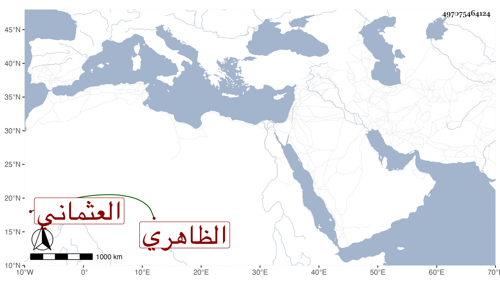

0902Sakhawi.DawLamic.ITO20230111-ara1.EIS1600.497075464124
Biography ID: 497075464124
623
فاطمة ابنة قلمطاي العثماني الظاهري وتدعى ستيتة عمة زينب ابنة الناصري محمد بن قلمطاي الماضية ، مات أبوها في سنة ثمانمائة وتزوجها الصلاح الرحبي التاجر فولدت له عبد القادر الماضي ومات عنها فتزوجها أبو العدل قاسم البلقيني وماتت تحته فيما بين الخمسين والستين ظنا ؛ وكانت رئيسة حشمة .
